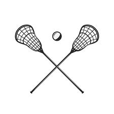

This website is dedicated to teaching you the basics of playing lacrosse.
On our website, you will find information about the equipment you need, the rules of the game, and tips for beginners. "Lacrosse is a passion of mine. The fast-paced nature of the game, the camaraderie among teammates, and the feeling of scoring a goal are just a few of the things that make it so special to me. I love the feeling of the stick in my hand and the sound of the ball hitting the back of the net. I have been playing lacrosse for many years now and I want to share my love and knowledge of the game with the world. I believe that lacrosse is a sport that can bring people together, promote teamwork and healthy competition. That's why I created this website, to help others discover the joys of lacrosse and hopefully inspire them to pick up a stick and join a team. I want to help grow the game and see it reach its full potential. Lacrosse is more than just a game, it's a way of life and I want to share that with as many people as possible."